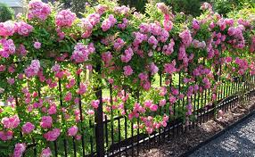
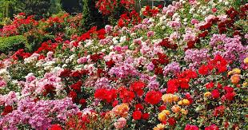

Rose Flower

Rose is a beautiful flower that requires proper planting and care to thrive. Follow these steps to plant your own roses and enjoy their stunning blooms:
- Choose a suitable location for your rose plants. Roses prefer well-drained soil and full sunlight.
- Prepare the soil by removing any weeds or debris. Loosen the soil and add organic matter such as compost to improve its fertility.
- Dig a hole that is wide and deep enough to accommodate the rose plant's root system. Place the plant in the hole, making sure the bud union (swollen area where the rose is grafted onto the rootstock) is level with or slightly above the soil surface.
- Backfill the hole with soil, gently firming it around the roots. Water the plant thoroughly to settle the soil and eliminate air pockets.
- Apply a layer of mulch around the base of the plant to conserve moisture, suppress weeds, and regulate soil temperature.
- Water the roses regularly, providing enough moisture to keep the soil evenly moist but not waterlogged.
- Fertilize the roses according to the recommended schedule and dosage for your specific rose variety.
- Prune the roses in early spring to remove dead or damaged wood and promote healthy growth.
- Monitor the roses for pests and diseases, and take appropriate measures to control them if necessary.
- Enjoy the beauty and fragrance of your roses as they bloom throughout the season!
About Rose Flower

Roses are one of the most popular and beloved flowers in the world. They come in a wide range of colors and varieties, each with its own unique beauty and fragrance. Roses have been cultivated for centuries and hold special symbolism in many cultures.
These flowers are known for their elegance and are often associated with love, romance, and beauty. They are commonly used in bouquets, floral arrangements, and gardens to add a touch of charm and sophistication.
Roses require proper care and attention to thrive and produce abundant blooms. They are typically grown in well-drained soil and require adequate sunlight, water, and nutrients. Regular pruning, fertilizing, and pest control are important for maintaining the health and vitality of rose plants.
With their enchanting fragrance and stunning petals, roses continue to captivate people's hearts and remain a timeless symbol of love and beauty.
Benefits of Growing Roses

Growing roses can bring numerous benefits to gardeners and flower enthusiasts:
- Beauty and Aesthetics: Roses are renowned for their exquisite beauty and vibrant colors, enhancing the visual appeal of any garden or landscape.
- Fragrance: Many rose varieties emit a delightful fragrance that can fill the air with a sweet and enchanting scent.
- Symbolism: Roses hold symbolic meanings associated with love, romance, and emotions, making them a popular choice for special occasions and heartfelt gestures.
- Therapeutic Value: Gardening and tending to roses can be a calming and therapeutic activity, providing stress relief and promoting mental well-being.
- Cutting Flowers: Roses make stunning cut flowers, allowing you to enjoy their beauty indoors and create beautiful floral arrangements.
- Attract Pollinators: The fragrant blossoms of roses attract pollinators such as bees and butterflies, contributing to the health and biodiversity of your garden.
- Community and Sharing: Growing roses can foster a sense of community and provide opportunities to share blooms, knowledge, and experiences with other rose enthusiasts.